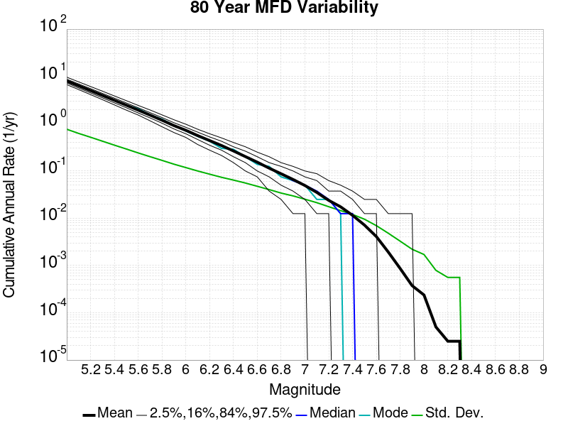
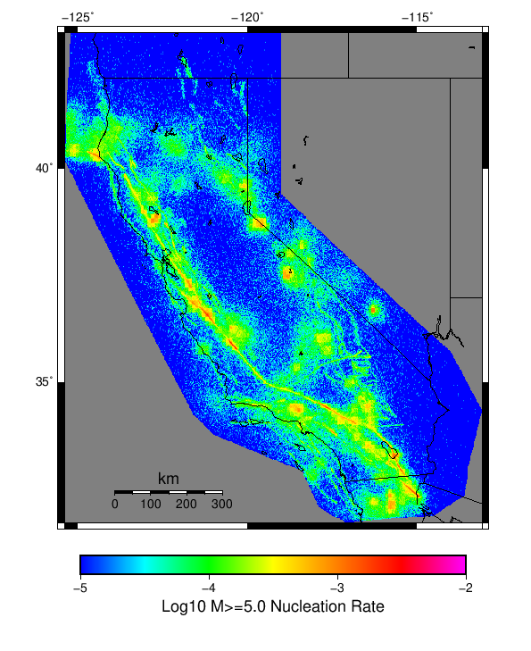

Start 1919, 100 yr, Log10(k)=-2.31, p=1.08, c=0.04, Spontaneous Results
| Start 1919, 100 yr, Log10(k)=-2.31, p=1.08, c=0.04, Spontaneous |
|---|
| Num Simulations | 1000 |
| Start Time | 1919/01/01 00:00:00 UTC |
| Start Time Epoch Milliseconds | -1609459200000 |
| Duration | 100 Years |
| Includes Spontaneous? | true |
| Trigger Ruptures | (none) |
| Historical Ruptures | (none) |
| Config Generated With | u3etas_config_builder.sh --start-year 1919 --num-simulations 1000 --duration-years 100 --include-spontaneous --etas-k -2.31 --etas-p 1.08 --etas-c 0.04 --hpc-site USC_HPC --nodes 36 --hours 24 --queue scec |
Table Of Contents
Magnitude Frequency Distribution
(top)
Legend
- Mean (thick black line): mean annual rate across all 1000 catalogs
- 2.5%,97.5% (thin black lines): annual rate percentiles across all 1000 catalogs
- Median (thin blue line): median annual rate across all 1000 catalogs
- Mode (thin cyan line): modal annual rate across all 1000 catalogs (scaled to annualized value)
- 100 yr Probability (thin red line): 100 year probability calculated as the fraction of catalogs with at least 1 occurrence
- 100 yr Supraseismogenic Probability (thin dashed red line): same as above, but only for supraseismogenic ruptures on explicitly modeled UCERF3 faults
- 95% Conf (light red shaded region): binomial 95% confidence bounds on probability
| Mag | Mean | 2.5 %ile | 97.5 %ile | Median | Mode | 100 yr Probability | 100 yr Supra-Seis Prob |
|---|
| M≥5 | 0.686 | 0.150 | 2.390 | 0.470 | 0.330 | 1.000 (100.00%) | 0.800 (80.00%) |
| M≥5.1 | 0.542 | 0.110 | 1.850 | 0.370 | 0.230 | 1.000 (100.00%) | 0.800 (80.00%) |
| M≥5.2 | 0.427 | 0.080 | 1.490 | 0.290 | 0.210 | 1.000 (100.00%) | 0.800 (80.00%) |
| M≥5.3 | 0.336 | 0.060 | 1.170 | 0.230 | 0.170 | 1.000 (100.00%) | 0.800 (80.00%) |
| M≥5.4 | 0.263 | 0.040 | 0.940 | 0.180 | 0.150 | 1.000 (100.00%) | 0.800 (80.00%) |
| M≥5.5 | 0.207 | 0.030 | 0.740 | 0.140 | 0.070 | 1.000 (100.00%) | 0.800 (80.00%) |
| M≥5.6 | 0.161 | 0.020 | 0.580 | 0.110 | 0.070 | 0.996 (99.60%) | 0.800 (80.00%) |
| M≥5.7 | 0.125 | 0.010 | 0.440 | 0.090 | 0.050 | 0.990 (99.00%) | 0.800 (80.00%) |
| M≥5.8 | 0.096 | 0.010 | 0.340 | 0.060 | 0.040 | 0.980 (98.00%) | 0.800 (80.00%) |
| M≥5.9 | 0.073 | 0.000 | 0.270 | 0.050 | 0.020 | 0.959 (95.90%) | 0.781 (78.10%) |
| M≥6 | 0.056 | 0.000 | 0.230 | 0.040 | 0.020 | 0.927 (92.70%) | 0.763 (76.30%) |
| M≥6.1 | 0.042 | 0.000 | 0.180 | 0.030 | 0.010 | 0.863 (86.30%) | 0.693 (69.30%) |
| M≥6.2 | 0.031 | 0.000 | 0.130 | 0.020 | 0.010 | 0.814 (81.40%) | 0.644 (64.40%) |
| M≥6.3 | 0.024 | 0.000 | 0.100 | 0.020 | 0.000 | 0.732 (73.20%) | 0.594 (59.40%) |
| M≥6.4 | 0.018 | 0.000 | 0.080 | 0.010 | 0.000 | 0.645 (64.50%) | 0.521 (52.10%) |
| M≥6.5 | 0.014 | 0.000 | 0.060 | 0.010 | 0.000 | 0.564 (56.40%) | 0.464 (46.40%) |
| M≥6.6 | 0.011 | 0.000 | 0.050 | 0.000 | 0.000 | 0.488 (48.80%) | 0.399 (39.90%) |
| M≥6.7 | 7.59E-3 | 0.000 | 0.040 | 0.000 | 0.000 | 0.405 (40.50%) | 0.328 (32.80%) |
| M≥6.8 | 5.62E-3 | 0.000 | 0.030 | 0.000 | 0.000 | 0.343 (34.30%) | 0.279 (27.90%) |
| M≥6.9 | 4.04E-3 | 0.000 | 0.030 | 0.000 | 0.000 | 0.267 (26.70%) | 0.218 (21.80%) |
| M≥7 | 2.85E-3 | 0.000 | 0.020 | 0.000 | 0.000 | 0.208 (20.80%) | 0.176 (17.60%) |
| M≥7.1 | 1.85E-3 | 0.000 | 0.020 | 0.000 | 0.000 | 0.146 (14.60%) | 0.126 (12.60%) |
| M≥7.2 | 1.22E-3 | 0.000 | 0.010 | 0.000 | 0.000 | 0.103 (10.30%) | 0.092 (9.20%) |
| M≥7.3 | 9.20E-4 | 0.000 | 0.010 | 0.000 | 0.000 | 0.080 (8.00%) | 0.076 (7.60%) |
| M≥7.4 | 5.70E-4 | 0.000 | 0.010 | 0.000 | 0.000 | 0.051 (5.10%) | 0.050 (5.00%) |
| M≥7.5 | 3.70E-4 | 0.000 | 0.010 | 0.000 | 0.000 | 0.034 (3.40%) | 0.034 (3.40%) |
| M≥7.6 | 2.10E-4 | 0.000 | 0.000 | 0.000 | 0.000 | 0.019 (1.90%) | 0.019 (1.90%) |
| M≥7.7 | 9.00E-5 | 0.000 | 0.000 | 0.000 | 0.000 | 8.00E-3 (0.80%) | 8.00E-3 (0.80%) |
| M≥7.8 | 1.00E-5 | 0.000 | 0.000 | 0.000 | 0.000 | 1.00E-3 (0.10%) | 1.00E-3 (0.10%) |
| M≥7.9 | 0.000 | 0.000 | 0.000 | 0.000 | 0.000 | 0.000 (0.00%) | 0.000 (0.00%) |
| M≥8 | 0.000 | 0.000 | 0.000 | 0.000 | 0.000 | 0.000 (0.00%) | 0.000 (0.00%) |
| M≥8.1 | 0.000 | 0.000 | 0.000 | 0.000 | 0.000 | 0.000 (0.00%) | 0.000 (0.00%) |
| M≥8.2 | 0.000 | 0.000 | 0.000 | 0.000 | 0.000 | 0.000 (0.00%) | 0.000 (0.00%) |
| M≥8.3 | 0.000 | 0.000 | 0.000 | 0.000 | 0.000 | 0.000 (0.00%) | 0.000 (0.00%) |
| M≥8.4 | 0.000 | 0.000 | 0.000 | 0.000 | 0.000 | 0.000 (0.00%) | 0.000 (0.00%) |
| M≥8.5 | 0.000 | 0.000 | 0.000 | 0.000 | 0.000 | 0.000 (0.00%) | 0.000 (0.00%) |
| M≥8.6 | 0.000 | 0.000 | 0.000 | 0.000 | 0.000 | 0.000 (0.00%) | 0.000 (0.00%) |
| M≥8.7 | 0.000 | 0.000 | 0.000 | 0.000 | 0.000 | 0.000 (0.00%) | 0.000 (0.00%) |
| M≥8.8 | 0.000 | 0.000 | 0.000 | 0.000 | 0.000 | 0.000 (0.00%) | 0.000 (0.00%) |
| M≥8.9 | 0.000 | 0.000 | 0.000 | 0.000 | 0.000 | 0.000 (0.00%) | 0.000 (0.00%) |
| M≥9 | 0.000 | 0.000 | 0.000 | 0.000 | 0.000 | 0.000 (0.00%) | 0.000 (0.00%) |
Long Term Rate Variability
(top)
80 Year Variability
(top)

Download CSV Here
| Magnitude | Mean | Median | Mode | Std. Dev. | 2.5 %-ile | 16 %-ile | 84 %-ile | 97.5 %-ile |
|---|
| 5.0 | 0.817925 | 0.575 | 0.4125 | 0.78938085 | 0.175 | 0.3125 | 1.275 | 2.75 |
| 5.1 | 0.6452625 | 0.45 | 0.2875 | 0.6285606 | 0.1375 | 0.2375 | 1.0125 | 2.1375 |
| 5.2 | 0.508825 | 0.35 | 0.2375 | 0.50343966 | 0.1 | 0.1875 | 0.8125 | 1.7375 |
| 5.3 | 0.400275 | 0.275 | 0.225 | 0.40030205 | 0.075 | 0.1375 | 0.6375 | 1.3875 |
| 5.4 | 0.3144 | 0.2125 | 0.125 | 0.3176793 | 0.05 | 0.1 | 0.5 | 1.0875 |
| 5.5 | 0.246675 | 0.175 | 0.175 | 0.2503655 | 0.025 | 0.075 | 0.3875 | 0.8875 |
| 5.6 | 0.1921625 | 0.1375 | 0.0875 | 0.19956467 | 0.025 | 0.0625 | 0.3 | 0.675 |
| 5.7 | 0.1492625 | 0.1 | 0.075 | 0.15808001 | 0.0125 | 0.0375 | 0.2375 | 0.5375 |
| 5.8 | 0.114375 | 0.075 | 0.05 | 0.122426905 | 0.0125 | 0.025 | 0.1875 | 0.4125 |
| 5.9 | 0.0872 | 0.0625 | 0.025 | 0.09597883 | 0.0 | 0.025 | 0.15 | 0.325 |
| 6.0 | 0.0670875 | 0.05 | 0.025 | 0.07525847 | 0.0 | 0.0125 | 0.1125 | 0.2625 |
| 6.1 | 0.0496875 | 0.0375 | 0.0125 | 0.058689356 | 0.0 | 0.0125 | 0.0875 | 0.2125 |
| 6.2 | 0.0375375 | 0.025 | 0.0125 | 0.04518375 | 0.0 | 0.0 | 0.0625 | 0.1625 |
| 6.3 | 0.0284375 | 0.0125 | 0.0 | 0.034674987 | 0.0 | 0.0 | 0.05 | 0.125 |
| 6.4 | 0.0215875 | 0.0125 | 0.0 | 0.028492507 | 0.0 | 0.0 | 0.0375 | 0.1 |
| 6.5 | 0.0163625 | 0.0125 | 0.0 | 0.023294957 | 0.0 | 0.0 | 0.0375 | 0.075 |
| 6.6 | 0.01265 | 0.0 | 0.0 | 0.01957481 | 0.0 | 0.0 | 0.025 | 0.0625 |
| 6.7 | 0.0090625 | 0.0 | 0.0 | 0.01534439 | 0.0 | 0.0 | 0.025 | 0.05 |
| 6.8 | 0.00675 | 0.0 | 0.0 | 0.01245864 | 0.0 | 0.0 | 0.0125 | 0.0375 |
| 6.9 | 0.0049 | 0.0 | 0.0 | 0.010162715 | 0.0 | 0.0 | 0.0125 | 0.0375 |
| 7.0 | 0.0034625 | 0.0 | 0.0 | 0.008146085 | 0.0 | 0.0 | 0.0125 | 0.025 |
| 7.1 | 0.00225 | 0.0 | 0.0 | 0.0063474635 | 0.0 | 0.0 | 0.0 | 0.0125 |
| 7.2 | 0.0015 | 0.0 | 0.0 | 0.004996245 | 0.0 | 0.0 | 0.0 | 0.0125 |
| 7.3 | 0.0011375 | 0.0 | 0.0 | 0.004161389 | 0.0 | 0.0 | 0.0 | 0.0125 |
| 7.4 | 7.125E-4 | 0.0 | 0.0 | 0.0032552558 | 0.0 | 0.0 | 0.0 | 0.0125 |
| 7.5 | 4.625E-4 | 0.0 | 0.0 | 0.002612311 | 0.0 | 0.0 | 0.0 | 0.0125 |
| 7.6 | 2.625E-4 | 0.0 | 0.0 | 0.002038136 | 0.0 | 0.0 | 0.0 | 0.0 |
| 7.7 | 1.125E-4 | 0.0 | 0.0 | 0.0013068288 | 0.0 | 0.0 | 0.0 | 0.0 |
| 7.8 | 1.25E-5 | 0.0 | 0.0 | 3.952847E-4 | 0.0 | 0.0 | 0.0 | 0.0 |
| 7.9 | 0.0 | 0.0 | 0.0 | 0.0 | 0.0 | 0.0 | 0.0 | 0.0 |
| 8.0 | 0.0 | 0.0 | 0.0 | 0.0 | 0.0 | 0.0 | 0.0 | 0.0 |
| 8.1 | 0.0 | 0.0 | 0.0 | 0.0 | 0.0 | 0.0 | 0.0 | 0.0 |
| 8.2 | 0.0 | 0.0 | 0.0 | 0.0 | 0.0 | 0.0 | 0.0 | 0.0 |
| 8.3 | 0.0 | 0.0 | 0.0 | 0.0 | 0.0 | 0.0 | 0.0 | 0.0 |
| 8.4 | 0.0 | 0.0 | 0.0 | 0.0 | 0.0 | 0.0 | 0.0 | 0.0 |
| 8.5 | 0.0 | 0.0 | 0.0 | 0.0 | 0.0 | 0.0 | 0.0 | 0.0 |
| 8.6 | 0.0 | 0.0 | 0.0 | 0.0 | 0.0 | 0.0 | 0.0 | 0.0 |
| 8.7 | 0.0 | 0.0 | 0.0 | 0.0 | 0.0 | 0.0 | 0.0 | 0.0 |
| 8.8 | 0.0 | 0.0 | 0.0 | 0.0 | 0.0 | 0.0 | 0.0 | 0.0 |
| 8.9 | 0.0 | 0.0 | 0.0 | 0.0 | 0.0 | 0.0 | 0.0 | 0.0 |
| 9.0 | 0.0 | 0.0 | 0.0 | 0.0 | 0.0 | 0.0 | 0.0 | 0.0 |
28 Year Variability
(top)

Download CSV Here
| Magnitude | Mean | Median | Mode | Std. Dev. | 2.5 %-ile | 16 %-ile | 84 %-ile | 97.5 %-ile |
|---|
| 5.0 | 0.78664285 | 0.2857143 | 0.0 | 1.2659712 | 0.0 | 0.035714287 | 1.5 | 4.214286 |
| 5.1 | 0.62060714 | 0.21428572 | 0.0 | 1.0046537 | 0.0 | 0.0 | 1.1785715 | 3.357143 |
| 5.2 | 0.4892857 | 0.17857143 | 0.0 | 0.8022817 | 0.0 | 0.0 | 0.9285714 | 2.6785715 |
| 5.3 | 0.38470238 | 0.14285715 | 0.0 | 0.6374412 | 0.0 | 0.0 | 0.75 | 2.1785715 |
| 5.4 | 0.3019524 | 0.10714286 | 0.0 | 0.50806934 | 0.0 | 0.0 | 0.60714287 | 1.7142857 |
| 5.5 | 0.23684524 | 0.071428575 | 0.0 | 0.40136263 | 0.0 | 0.0 | 0.4642857 | 1.3571428 |
| 5.6 | 0.18459524 | 0.071428575 | 0.0 | 0.3193961 | 0.0 | 0.0 | 0.35714287 | 1.0357143 |
| 5.7 | 0.14332142 | 0.035714287 | 0.0 | 0.253956 | 0.0 | 0.0 | 0.2857143 | 0.85714287 |
| 5.8 | 0.10979762 | 0.035714287 | 0.0 | 0.19819897 | 0.0 | 0.0 | 0.21428572 | 0.6785714 |
| 5.9 | 0.08366667 | 0.035714287 | 0.0 | 0.15564592 | 0.0 | 0.0 | 0.17857143 | 0.5 |
| 6.0 | 0.06434524 | 0.0 | 0.0 | 0.1216465 | 0.0 | 0.0 | 0.14285715 | 0.39285713 |
| 6.1 | 0.047714286 | 0.0 | 0.0 | 0.09410393 | 0.0 | 0.0 | 0.10714286 | 0.2857143 |
| 6.2 | 0.03604762 | 0.0 | 0.0 | 0.073412806 | 0.0 | 0.0 | 0.071428575 | 0.21428572 |
| 6.3 | 0.02729762 | 0.0 | 0.0 | 0.057428487 | 0.0 | 0.0 | 0.071428575 | 0.21428572 |
| 6.4 | 0.020714285 | 0.0 | 0.0 | 0.047148913 | 0.0 | 0.0 | 0.035714287 | 0.14285715 |
| 6.5 | 0.015738096 | 0.0 | 0.0 | 0.03855712 | 0.0 | 0.0 | 0.035714287 | 0.14285715 |
| 6.6 | 0.012178571 | 0.0 | 0.0 | 0.032452103 | 0.0 | 0.0 | 0.035714287 | 0.10714286 |
| 6.7 | 0.008726191 | 0.0 | 0.0 | 0.025475182 | 0.0 | 0.0 | 0.0 | 0.071428575 |
| 6.8 | 0.006488095 | 0.0 | 0.0 | 0.020457353 | 0.0 | 0.0 | 0.0 | 0.071428575 |
| 6.9 | 0.004702381 | 0.0 | 0.0 | 0.016792206 | 0.0 | 0.0 | 0.0 | 0.035714287 |
| 7.0 | 0.0033214286 | 0.0 | 0.0 | 0.013445448 | 0.0 | 0.0 | 0.0 | 0.035714287 |
| 7.1 | 0.0021666666 | 0.0 | 0.0 | 0.010413306 | 0.0 | 0.0 | 0.0 | 0.035714287 |
| 7.2 | 0.0014285714 | 0.0 | 0.0 | 0.008072036 | 0.0 | 0.0 | 0.0 | 0.035714287 |
| 7.3 | 0.0010833333 | 0.0 | 0.0 | 0.0066584055 | 0.0 | 0.0 | 0.0 | 0.035714287 |
| 7.4 | 6.785714E-4 | 0.0 | 0.0 | 0.00513167 | 0.0 | 0.0 | 0.0 | 0.0 |
| 7.5 | 4.404762E-4 | 0.0 | 0.0 | 0.0040488364 | 0.0 | 0.0 | 0.0 | 0.0 |
| 7.6 | 2.5E-4 | 0.0 | 0.0 | 0.0029780914 | 0.0 | 0.0 | 0.0 | 0.0 |
| 7.7 | 1.07142856E-4 | 0.0 | 0.0 | 0.001953541 | 0.0 | 0.0 | 0.0 | 0.0 |
| 7.8 | 1.1904762E-5 | 0.0 | 0.0 | 6.5205066E-4 | 0.0 | 0.0 | 0.0 | 0.0 |
| 7.9 | 0.0 | 0.0 | 0.0 | 0.0 | 0.0 | 0.0 | 0.0 | 0.0 |
| 8.0 | 0.0 | 0.0 | 0.0 | 0.0 | 0.0 | 0.0 | 0.0 | 0.0 |
| 8.1 | 0.0 | 0.0 | 0.0 | 0.0 | 0.0 | 0.0 | 0.0 | 0.0 |
| 8.2 | 0.0 | 0.0 | 0.0 | 0.0 | 0.0 | 0.0 | 0.0 | 0.0 |
| 8.3 | 0.0 | 0.0 | 0.0 | 0.0 | 0.0 | 0.0 | 0.0 | 0.0 |
| 8.4 | 0.0 | 0.0 | 0.0 | 0.0 | 0.0 | 0.0 | 0.0 | 0.0 |
| 8.5 | 0.0 | 0.0 | 0.0 | 0.0 | 0.0 | 0.0 | 0.0 | 0.0 |
| 8.6 | 0.0 | 0.0 | 0.0 | 0.0 | 0.0 | 0.0 | 0.0 | 0.0 |
| 8.7 | 0.0 | 0.0 | 0.0 | 0.0 | 0.0 | 0.0 | 0.0 | 0.0 |
| 8.8 | 0.0 | 0.0 | 0.0 | 0.0 | 0.0 | 0.0 | 0.0 | 0.0 |
| 8.9 | 0.0 | 0.0 | 0.0 | 0.0 | 0.0 | 0.0 | 0.0 | 0.0 |
| 9.0 | 0.0 | 0.0 | 0.0 | 0.0 | 0.0 | 0.0 | 0.0 | 0.0 |
Variability Duration Dependence
(top)

Download CSV Here
| Duration (years) | Mean | Median | Mode | Std. Dev. | 2.5 %-ile | 16 %-ile | 84 %-ile | 97.5 %-ile |
|---|
| 1.0 | 0.68625 | 0.0 | 0.0 | 2.7963636 | 0.0 | 0.0 | 1.0 | 6.0 |
| 2.0 | 0.68625 | 0.0 | 0.0 | 2.3403792 | 0.0 | 0.0 | 1.0 | 5.5 |
| 4.0 | 0.68625 | 0.0 | 0.0 | 1.9758693 | 0.0 | 0.0 | 1.0 | 5.25 |
| 6.0 | 0.7089583 | 0.16666667 | 0.0 | 1.8383178 | 0.0 | 0.0 | 1.1666666 | 5.1666665 |
| 8.0 | 0.7089583 | 0.125 | 0.0 | 1.7401142 | 0.0 | 0.0 | 1.125 | 5.125 |
| 10.0 | 0.68625 | 0.1 | 0.0 | 1.6179919 | 0.0 | 0.0 | 1.2 | 4.9 |
| 12.0 | 0.7089583 | 0.16666667 | 0.0 | 1.569323 | 0.0 | 0.0 | 1.3333334 | 4.9166665 |
| 14.0 | 0.6977551 | 0.14285715 | 0.0 | 1.5010897 | 0.0 | 0.0 | 1.3571428 | 4.785714 |
| 16.0 | 0.7089583 | 0.125 | 0.0 | 1.4587731 | 0.0 | 0.0 | 1.4375 | 4.6875 |
| 18.0 | 0.74538887 | 0.16666667 | 0.0 | 1.442083 | 0.0 | 0.0 | 1.5 | 4.8333335 |
| 20.0 | 0.68625 | 0.15 | 0.0 | 1.3317076 | 0.0 | 0.0 | 1.35 | 4.4 |
| 22.0 | 0.75852275 | 0.18181819 | 0.0 | 1.3553251 | 0.0 | 0.0 | 1.5 | 4.5454545 |
| 24.0 | 0.7089583 | 0.16666667 | 0.0 | 1.2729089 | 0.0 | 0.0 | 1.4166666 | 4.25 |
| 26.0 | 0.8332308 | 0.30769232 | 0.0 | 1.3300864 | 0.0 | 0.03846154 | 1.6153846 | 4.4615383 |
| 28.0 | 0.78664285 | 0.2857143 | 0.0 | 1.2659712 | 0.0 | 0.035714287 | 1.5 | 4.214286 |
| 30.0 | 0.74538887 | 0.26666668 | 0.0 | 1.2025942 | 0.0 | 0.033333335 | 1.4333333 | 4.0 |
| 32.0 | 0.7089583 | 0.25 | 0.0 | 1.1469693 | 0.0 | 0.03125 | 1.34375 | 3.8125 |
| 34.0 | 0.9288088 | 0.5882353 | 0.029411765 | 1.2463298 | 0.0 | 0.05882353 | 1.7058823 | 4.470588 |
| 36.0 | 0.88655555 | 0.5555556 | 0.027777778 | 1.1933366 | 0.0 | 0.055555556 | 1.6111112 | 4.1944447 |
| 38.0 | 0.8500263 | 0.5263158 | 0.02631579 | 1.1486012 | 0.0 | 0.05263158 | 1.5526316 | 4.0526314 |
| 40.0 | 0.817925 | 0.5 | 0.025 | 1.1146563 | 0.0 | 0.05 | 1.475 | 3.95 |
| 42.0 | 0.78664285 | 0.47619048 | 0.023809524 | 1.0808309 | 0.0 | 0.04761905 | 1.4285715 | 3.7619047 |
| 44.0 | 0.75852275 | 0.45454547 | 0.022727273 | 1.0470407 | 0.0 | 0.045454547 | 1.3636364 | 3.6818182 |
| 46.0 | 0.7329674 | 0.4347826 | 0.02173913 | 1.0199245 | 0.0 | 0.04347826 | 1.3478261 | 3.5217392 |
| 48.0 | 0.7089583 | 0.4375 | 0.020833334 | 0.9900583 | 0.0 | 0.041666668 | 1.2916666 | 3.4791667 |
| 50.0 | 0.68625 | 0.42 | 0.02 | 0.9621811 | 0.0 | 0.04 | 1.24 | 3.34 |
| 52.0 | 1.1434616 | 0.8076923 | 0.5 | 1.0732874 | 0.26923078 | 0.46153846 | 1.75 | 3.8269231 |
| 54.0 | 1.1096296 | 0.7777778 | 0.4814815 | 1.0417476 | 0.25925925 | 0.44444445 | 1.6851852 | 3.7222223 |
| 56.0 | 1.0802857 | 0.76785713 | 0.4642857 | 1.0139813 | 0.25 | 0.42857143 | 1.6428572 | 3.5892856 |
| 58.0 | 1.0529138 | 0.7413793 | 0.44827586 | 0.9900392 | 0.2413793 | 0.41379312 | 1.6206896 | 3.5 |
| 60.0 | 1.0249333 | 0.71666664 | 0.53333336 | 0.9676893 | 0.23333333 | 0.4 | 1.5666667 | 3.3833334 |
| 62.0 | 0.9983871 | 0.6935484 | 0.516129 | 0.94328094 | 0.22580644 | 0.38709676 | 1.532258 | 3.3064516 |
| 64.0 | 0.97442186 | 0.6875 | 0.5 | 0.9220979 | 0.21875 | 0.375 | 1.515625 | 3.203125 |
| 66.0 | 0.9505303 | 0.6666667 | 0.5 | 0.9001745 | 0.21212122 | 0.36363637 | 1.469697 | 3.1060605 |
| 68.0 | 0.9288088 | 0.6617647 | 0.4852941 | 0.8818189 | 0.20588236 | 0.3529412 | 1.4411764 | 3.0294118 |
| 70.0 | 0.9077714 | 0.64285713 | 0.47142857 | 0.86296016 | 0.2 | 0.34285715 | 1.4142857 | 2.9571428 |
| 72.0 | 0.88655555 | 0.625 | 0.3611111 | 0.843471 | 0.19444445 | 0.33333334 | 1.375 | 2.8888888 |
| 74.0 | 0.86756754 | 0.6081081 | 0.3243243 | 0.8254774 | 0.1891892 | 0.3243243 | 1.3513514 | 2.8513513 |
| 76.0 | 0.8500263 | 0.59210527 | 0.34210527 | 0.8092326 | 0.18421052 | 0.31578946 | 1.3157895 | 2.868421 |
| 78.0 | 0.8332308 | 0.5769231 | 0.42307693 | 0.79363614 | 0.17948718 | 0.32051283 | 1.2948718 | 2.8076923 |
| 80.0 | 0.817925 | 0.575 | 0.4125 | 0.78938085 | 0.175 | 0.3125 | 1.275 | 2.75 |
| 82.0 | 0.80212194 | 0.5609756 | 0.40243903 | 0.77620566 | 0.17073171 | 0.30487806 | 1.2439024 | 2.707317 |
| 84.0 | 0.78664285 | 0.54761904 | 0.39285713 | 0.7628467 | 0.16666667 | 0.29761904 | 1.2261904 | 2.6785715 |
| 86.0 | 0.77255815 | 0.53488374 | 0.38372093 | 0.7512408 | 0.1627907 | 0.29069766 | 1.2093023 | 2.6511629 |
| 88.0 | 0.75852275 | 0.52272725 | 0.375 | 0.74088246 | 0.1590909 | 0.2840909 | 1.1931819 | 2.590909 |
| 90.0 | 0.74538887 | 0.51111114 | 0.36666667 | 0.7308783 | 0.15555556 | 0.2777778 | 1.1666666 | 2.5333333 |
| 92.0 | 0.7329674 | 0.5 | 0.35869566 | 0.7193449 | 0.1521739 | 0.27173913 | 1.1413044 | 2.4782608 |
| 94.0 | 0.7205851 | 0.4893617 | 0.35106382 | 0.7089229 | 0.14893617 | 0.26595744 | 1.1170213 | 2.4787233 |
| 96.0 | 0.7089583 | 0.47916666 | 0.34375 | 0.6986377 | 0.14583333 | 0.27083334 | 1.09375 | 2.4270833 |
| 98.0 | 0.6977551 | 0.47959185 | 0.33673468 | 0.6883011 | 0.15306123 | 0.26530612 | 1.0816326 | 2.4285715 |
| 100.0 | 0.68625 | 0.47 | 0.33 | 0.6770783 | 0.15 | 0.26 | 1.07 | 2.39 |
Section Participation
(top)
Section Participation Plots
(top)
| Min Mag | Complete Catalog (including spontaneous) |
|---|
| All Supra. Seis. |  |
| M≥6.5 |  |
| M≥7 |  |
| M≥7.5 |  |
Supra-Seismogenic Parent Sections Table
(top)
First 10 of 262 with matching ruptures shown
| Parent Name | Total Mean Annual Rate | Total 100 Year Prob |
|---|
| San Andreas (Parkfield) | 0.00327 | 0.241 |
| San Andreas (Creeping Section) 2011 CFM | 0.00177 | 0.151 |
| Cerro Prieto | 8.7E-4 | 0.075 |
| Imperial | 8.6E-4 | 0.079 |
| Brawley (Seismic Zone) alt 1 | 7.8E-4 | 0.073 |
| Mendocino | 7.3E-4 | 0.069 |
| Hunting Creek - Berryessa 2011 CFM | 4.7E-4 | 0.036 |
| Ortigalita (North) | 4.5E-4 | 0.034 |
| Calaveras (So) - Paicines extension 2011 CFM | 4.3E-4 | 0.038 |
| San Andreas (Mojave S) | 4.1E-4 | 0.035 |
M≥6.5 Parent Sections Table
(top)
First 10 of 228 with matching ruptures shown
| Parent Name | Total Mean Annual Rate | Total 100 Year Prob |
|---|
| Cerro Prieto | 6.5E-4 | 0.061 |
| Imperial | 5.6E-4 | 0.053 |
| Brawley (Seismic Zone) alt 1 | 5.3E-4 | 0.051 |
| San Andreas (Creeping Section) 2011 CFM | 3.5E-4 | 0.033 |
| San Andreas (Coachella) rev | 3.1E-4 | 0.03 |
| Mendocino | 3.0E-4 | 0.03 |
| San Andreas (Santa Cruz Mts) 2011 CFM | 2.2E-4 | 0.021 |
| San Andreas (San Gorgonio Pass-Garnet HIll) | 2.0E-4 | 0.019 |
| Calaveras (So) - Paicines extension 2011 CFM | 1.9E-4 | 0.018 |
| Rodgers Creek - Healdsburg 2011 CFM | 1.9E-4 | 0.017 |
M≥7 Parent Sections Table
(top)
First 10 of 149 with matching ruptures shown
| Parent Name | Total Mean Annual Rate | Total 100 Year Prob |
|---|
| Cerro Prieto | 2.2E-4 | 0.022 |
| San Andreas (Coachella) rev | 2.1E-4 | 0.02 |
| Brawley (Seismic Zone) alt 1 | 2.0E-4 | 0.019 |
| Imperial | 2.0E-4 | 0.019 |
| San Andreas (San Gorgonio Pass-Garnet HIll) | 1.7E-4 | 0.016 |
| San Andreas (Creeping Section) 2011 CFM | 1.4E-4 | 0.013 |
| San Andreas (Santa Cruz Mts) 2011 CFM | 1.2E-4 | 0.012 |
| Bartlett Springs 2011 CFM | 1.0E-4 | 0.01 |
| Calaveras (Central) 2011 CFM | 1.0E-4 | 0.01 |
| Rodgers Creek - Healdsburg 2011 CFM | 1.0E-4 | 0.01 |
M≥7.5 Parent Sections Table
(top)
First 10 of 78 with matching ruptures shown
| Parent Name | Total Mean Annual Rate | Total 100 Year Prob |
|---|
| Bartlett Springs 2011 CFM | 8.0E-5 | 0.008 |
| Hunting Creek - Bartlett Springs connector 2011 | 6.0E-5 | 0.006 |
| Eaton Roughs 2011 CFM | 5.0E-5 | 0.004 |
| Brawley (Seismic Zone) alt 1 | 4.0E-5 | 0.004 |
| Imperial | 4.0E-5 | 0.004 |
| San Andreas (Coachella) rev | 4.0E-5 | 0.004 |
| Calico-Hidalgo | 3.0E-5 | 0.003 |
| Death Valley (Black Mtns Frontal) | 3.0E-5 | 0.003 |
| Death Valley (No) | 3.0E-5 | 0.003 |
| Oak Ridge (Onshore) | 3.0E-5 | 0.003 |
Gridded Nucleation
(top)
| Min Mag | Complete Catalog (including spontaneous) |
|---|
| M≥5 |  |
| M≥6 |  |
| M≥7 | |
(top)
{
"numSimulations": 1000,
"duration": 100.0,
"startYear": 1919,
"includeSpontaneous": true,
"randomSeed": 1566932703125,
"binaryOutput": true,
"binaryOutputFilters": [
{
"prefix": "results_complete",
"descendantsOnly": false
},
{
"prefix": "results_m5_preserve_chain",
"minMag": 5.0,
"preserveChainBelowMag": true,
"descendantsOnly": false
}
],
"forceRecalc": false,
"simulationName": "Start 1919, 100 yr, Log10(k)\u003d-2.31, p\u003d1.08, c\u003d0.04, Spontaneous",
"numRetries": 3,
"outputDir": "${ETAS_SIM_DIR}/2019_08_27-Start1919_100yr_Log10_k_2p31_p1p08_c0p04_Spontaneous-includeSpont-full_td-scale1.14-modParams",
"cacheDir": "${ETAS_LAUNCHER}/inputs/cache_fm3p1_ba",
"fssFile": "${ETAS_LAUNCHER}/inputs/2013_05_10-ucerf3p3-production-10runs_COMPOUND_SOL_FM3_1_SpatSeisU3_MEAN_BRANCH_AVG_SOL.zip",
"probModel": "FULL_TD",
"applySubSeisForSupraNucl": true,
"totRateScaleFactor": 1.14,
"gridSeisCorr": true,
"timeIndependentERF": false,
"griddedOnly": false,
"imposeGR": false,
"includeIndirectTriggering": true,
"gridSeisDiscr": 0.1,
"catalogCompletenessModel": "RELAXED",
"etas_p": 1.08,
"etas_c": 0.04,
"etas_log10_k": -2.31,
"configCommand": "u3etas_config_builder.sh --start-year 1919 --num-simulations 1000 --duration-years 100 --include-spontaneous --etas-k -2.31 --etas-p 1.08 --etas-c 0.04 --hpc-site USC_HPC --nodes 36 --hours 24 --queue scec",
"configTime": 1566932703125
}